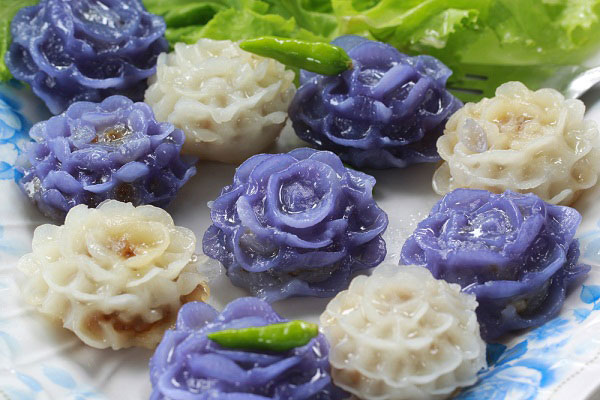

ช่อม่วง

ส่วนผสม ช่อม่วง
• น้ำมันพืช 1 ช้อนโต๊ะ
• หมูสามชั้นต้มสุก 1/4 ถ้วย (หั่นสี่เหลี่ยมเล็ก ๆ)
• ฟักเชื่อมแห้ง 150 กรัม (หั่นสี่เหลี่ยมเล็ก ๆ)
• เกลือป่น 1/2 ช้อนชา
• น้ำตาลทราย 1 ช้อนโต๊ะ
• งาขาวคั่ว 50 กรัม
• ถั่วลิสงคั่ว 50 กรัม
• แป้งข้าวเจ้า 1 ถ้วย
• แป้งเท้ายายม่อม 1/2 ช้อนโต๊ะ
• แป้งมันสำปะหลัง 1/2 ช้อนโต๊ะ
• น้ำลอยดอกมะลิ 1 ถ้วย (หรือน้ำผสมกลิ่นมะลิ)
• ดอกอัญชัน 10 ดอก
• แป้งมันสำปะหลัง เล็กน้อย (สำหรับทาแหนบตอนจับจีบขนม)
• ผักกาดหอม สำหรับเสิร์ฟ
• กระเทียมเจียว (โรยหน้า)
• พริกขี้หนูสวน (โรยหน้า)
วิธีทำไส้ขนมช่อม่วง
1. ตั้งกระทะใส่น้ำมันพืชลงไป เอาหมูสามชั้นที่หั่นไว้ลงไปผัด ใช้ไฟปานกลาง
รอจนน้ำมันหมูออกมาและหมูเริ่มสุกสีเหลือง
2. ใส่ฟักเชื่อมลงไปผัดใช้ไฟอ่อน ปรุงรสด้วยเกลือและน้ำตาลทราย ใส่งาขาวและถั่วลิสงลงไป
ผัดให้เข้ากันดีจนแห้ง ตักใส่ชาม เตรียมไว้
วิธีทำแป้งขนมช่อม่วง
1. ร่อนแป้งข้าวเจ้า แป้งมันสำปะหลัง และแป้งเท้ายายม่อมเข้าด้วยกัน 2-3 รอบจนเนียนละเอียด
2. ใส่น้ำมันพืชลงไป ค่อย ๆ เติมน้ำเปล่าและน้ำดอกมะลิลงไปจนหมด
ใช้มือขยำคนนวดส่วนผสมแป้งให้ละเอียดเข้ากัน แบ่งส่วนผสมแป้งเป็น 2 ส่วนเท่า ๆ กัน
3. คั้นน้ำดอกอัญชันแล้วบีบน้ำมะนาวลงไป เทใส่ลงในส่วนผสมแป้ง 1 ถ้วยคลุกเคล้าให้เข้ากัน
4. ใส่ส่วนผสมแป้งลงในกระทะทองเหลือง ใช้ไฟกลางค่อนข้างอ่อน ใช้ไม้พายกวนไปเรื่อย ๆ
จนส่วนผสมร่อนจากกระทะ ประมาณ 5-10 นาที ตักใส่ภาชนะ พักไว้จนแป้งเริ่มอุ่น
5. โรยแป้งนวลลงไปเล็กน้อยแล้วลงมือนวดแป้งให้เนียนแล้วคลุมด้วยผ้าขาวบางหมาด ๆ
เพื่อไม่ให้แป้งแห้ง
ที่มา https://cooking.kapook.com/view191493.html